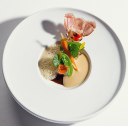

RECOMMENDEDHouse Pick
★★★★★ · RELAIS & CHÂTEAUX · SLH · MICHELIN KEY
Paalsteenlaan 90 · Neerharen · est. 1924

WALK TO DINNER
0 m
restaurant is in the lobby
ROOMS
62 Le Manoir / La Villa / La Forêt[4]
REVIEWS
4.6 / 5 795 reviews · #1 of 3 in Lanaken[6]
SETTING
Hoge Kempen edge 1924 estate, three buildings around a lake[2]
BUS
~400 m Neerharen Dobbelsteynstraat[16]
★ ON THE PROPERTY
enclosed with your sleeve
- Shiseido Spa Aquamarijn — indoor pool, treatments, the obvious morning-after move[8].
- Le Ciel bistro + Bar Papillon for breakfast, lunch, and the quiet drink before dinner[8].
- Restaurant Ralf Berendsen — two stars, in the building. Book the gastronomic-stay package and the table is bundled with the room[8].
- Rooms include air conditioning, bathrobes, safe, free WiFi[4].
- Also listed by Visit Limburg[17] and on World's 50 Best Discovery[14].